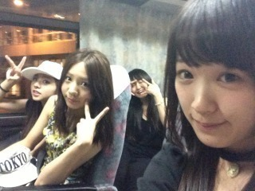
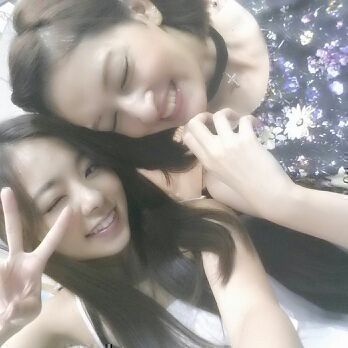

いぇーーーーいっ☆★☆★
ついに来ました！！
『真夏の全国ツアー Zepp live』
イン 北海どーーーーう！！！
ババババーン ☆
↑めっちゃ笑顔やろ、、、＼(^o^)／笑
普段の自然な笑顔で撮れました\(´▽`)/
北海道に来るのは
わたくし実は、な、な、ななんと
10年ぶりです！！(*▽*)ヤバ
8歳の頃 ４泊５日で北海道の
スキー場で滑ってました。あはん♪
にしても 明日は1回目です(о´∀`о)
楽しみで仕方ありません！
どんなことが起こりよるか
分かりまてんけど何とぞ 皆たま
よろちくお願いしまーーす！！！★
ぃゃぃゃ、そんな変なことは
おきなくってよ、安心して(*^^*)
楽しいことが起きるといいなぁ〜。
皆さんっ!
普段たまってるストレスや悩み事を
一緒に ぶっ飛ばしちゃいましょう☆!!
かずみんblogから とりました!

バスでの移動中...
今日も チームD仲良しこよし。笑
あみの唇は1つやで!!
...... ごめん(>▽<)
意味分かりませんよね ！
スルーしてください！あは
ではでは 私は
今日は りな♪と同じヘアなんで
仲良く寝たいと思います!!
本当 よろしくねっ(^_-)-☆
まひろのこと見ててよっ!？
のし♪
